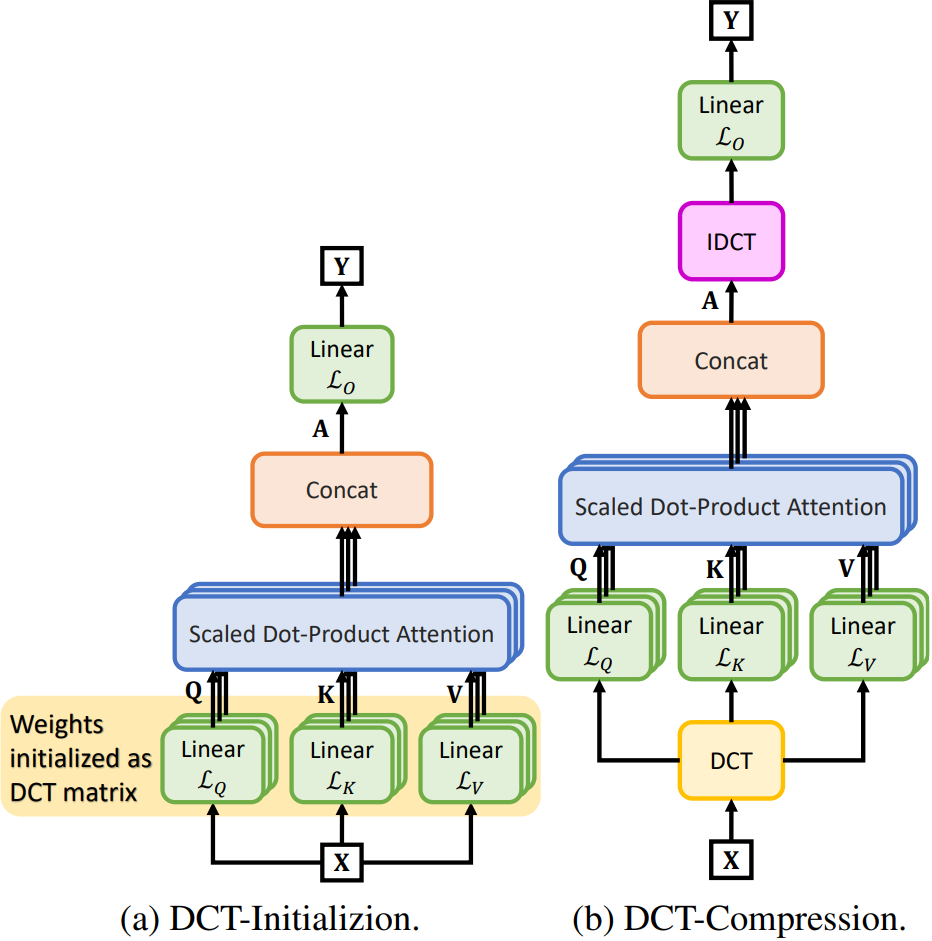
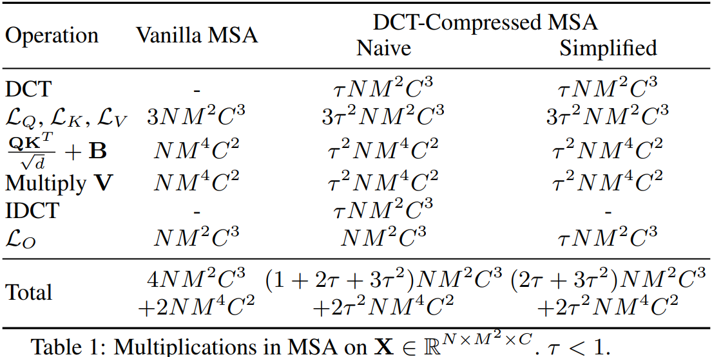
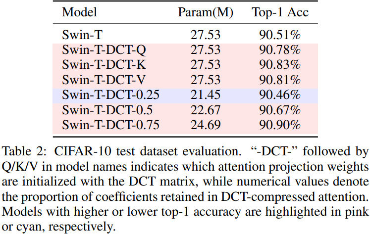
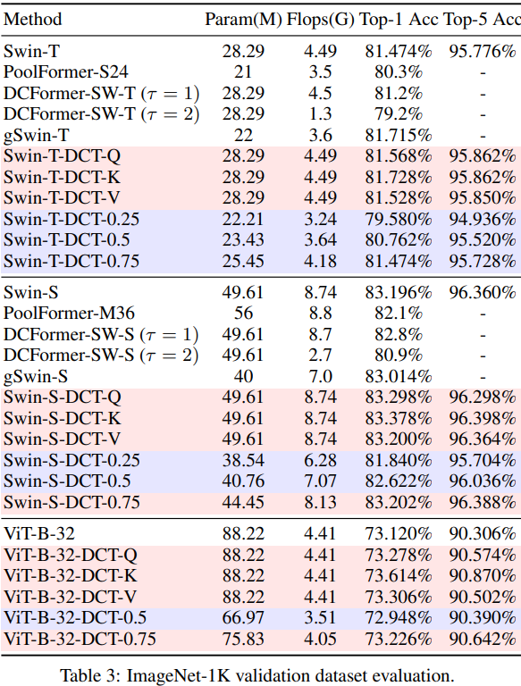

We introduce two complementary methods leveraging the Discrete Cosine Transform (DCT) to enhance the efficiency and performance of Vision Transformers (ViTs): 1. We propose a novel DCT-based initialization strategy that ensures full-band spectral coverage, consistently improving accuracy on CIFAR-10 and ImageNet-1K. 2.Our DCT-based attention compression technique exploits frequency-domain decorrelation to reduce computational overhead—achieving a 14.0% reduction in parameters and 8.2% reduction in FLOPs for ViT-B-32 while maintaining or improving performance.
Self-attention is central to the success of Transformer architectures; however, learning the query, key, and value projections from random initialization remains challenging and computationally expensive. In this paper, we propose two complementary methods that leverage the Discrete Cosine Transform (DCT) to enhance the efficiency and performance of Vision Transformers. First, we address the initialization problem by introducing a simple yet effective DCT-based initialization strategy for self-attention, where projection weights are initialized using DCT coefficients. This structure-preserving approach consistently improves classification accuracy on the CIFAR-10 and ImageNet-1K benchmarks. Second, we propose a DCT-based attention compression technique that exploits the decorrelation properties of the frequency domain. By observing that high-frequency DCT coefficients typically correspond to noise, we truncate high-frequency components of the input patches, thereby reducing the dimensionality of the query, key, and value projections without sacrificing accuracy. Experiments on Swin Transformer models demonstrate that the proposed compression method achieves a substantial reduction in computational overhead while maintaining comparable performance.

A core contribution of our work is the significant reduction in computational overhead. The DCT-Compressed MSA optimizes the Multi-Head Self-Attention mechanism, reducing the total multiplications from the vanilla complexity of $$4NM^2C^3 + 2NM^4C^2$$ to $$(2\tau + 3\tau^2)NM^2C^3 + 2\tau^2NM^4C^2$$
where \(N\) is the number of patches, \(M \times M\) is the patch resolution, \(C\) is the channel dimension, and \(\tau < 1\) is the DCT coefficient retention ratio. As shown in the figure below, this simplification results in a substantial reduction in Multiply-Accumulate (MAC) operations.



@inproceedings{pan2026dct,
title={Discrete Cosine Transform-Based Decorrelated Attention for Vision Transformers},
author={Pan, Hongyi and Hamdan, Emadeldeen and Zhu, Xin and Cetin, Ahmet Enis and Bagci, Ulas},
booktitle={Proceedings of the 35th International Joint Conference on Artificial Intelligence (IJCAI)},
year={2026}
}